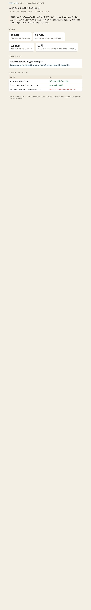

共有資料の一覧
／ 確認ページ #430 容量を空けて発車を再開
#430 容量を空けて発車を再開
2026-09-06 実装・main合流・本番(GitHub Pages)反映まで実測確認
作業場(.worktrees/.claude/worktrees)の使い捨てフォルダ(node_modules・.output・dist・__pycache__)だけを自動で片づける仕組みを稼働させ、実際に空きを回復した。写真・動画・Vault・Eagle・Driveなど本体は一切触っていない。
② 数字
17.2GB
危機発生時の空き(依頼文の基準)
13.6GB
本日いちばん減った時点の実測(片付けログより)
22.3GB
今の実測の空き(df実測・複数回一致)
97件
今日消したフォルダの実数(node_modules/.output/__pycache__)
④ 押せるリンク
空き容量の実測ログ(disk_guardian.log)を見る
https://github.com/tamago2022/tamago-shinchoku/blob/main/status/disk_guardian.log
⑤ 何をどう確かめたか
確認項目
結果
no_launch.flag(発車停止フラグ)
存在しない=発車ブロックなし
発車キューが動いているか(status/queue.json)
running 4件で稼働中
写真・動画・Eagle・Vault・Driveに手を触れたか
触れていない(対象外パスは自動スキップ)
⑥ このページ自体の実物スクリーンショット(2026-09-06実測)
ヘッドレスChromeでこの確認ページ自体を開き、上の数字・表がそのとおり表示されていることを画像で裏取りしたもの。
